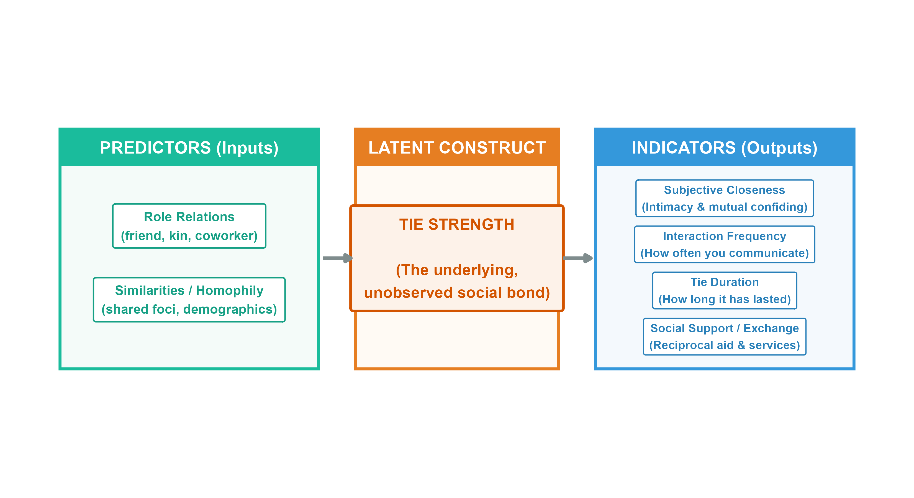

The Strength of Weak Ties
Granovetter’s Theory of Social Bridges, Local Density, and Information Bandwidth
Form vs. Content in Social Relations
- In everyday life, we tend to categorize relations by their content:
- Kin (parent, sibling), Friends (best friend, work friend), Romantic partners, or activity-based groups (workout buddies, gaming crew).
- Network Analysis abstracts away from content to study the form of social relations:
- Tie Strength (intensity) is a formal property that cuts across different contents.
- For example, you can have a coworker (content) with whom you interact daily (frequency, form) or a sibling (content) whom you rarely see (frequency, form).
- Formal properties allow us to build generalizable theories of social structure.
What is a Social Tie? (States vs. Events)
Social network researchers classify ties into two major clusters (Borgatti et al., 2009):
1. States (Static Situations)
- Similarities: Demographic overlaps, shared group memberships, or spatial proximity.
- Relations: Kinship roles (parent-child), organizational roles (boss-employee), or affective/cognitive states (liking, trusting).
2. Events (Processes in Time)
- Interactions: Discrete, temporal behavioral events (talking, working together, helping move).
- Flows: The transmission of physical or intangible items (information, money, disease).
Connection to Tie Strength:
- Tie strength represents an affective/role state that is built, maintained, and indicated by temporal events (interaction frequency and flow of support).
Caveats of Tie Strength: Correlation vs. Identity
- Rule 1: Multiple indicators are required
- Having only one property is not sufficient to qualify a tie as strong.
- Counter-Example 1 (High frequency, Low intimacy): You see a coworker you hate every single weekday. This is high interaction frequency (event), but low intimacy or sentiment. The tie is weak (or even negative!).
- Counter-Example 2 (Low frequency, High intimacy): You confide an intimate secret to a casual acquaintance. This is a one-time confiding event, but lacks duration and frequency. The tie remains weak.
- Rule 2: Tie types are correlations, not identities
- Kin ties or similar-race ties are expected to be strong, but they do not have to be.
- Example: You can be estranged from a parent or sibling (kin role is a state, but interaction events are zero).
- Role relations and similarities are predictors of tie strength, not identical to tie strength itself.
Measuring Tie Strength: Indicators & Predictors
Marsden & Campbell’s Model: The Visual Framework
- Peter Marsden and Karen Campbell (1984) distinguish between the predictors (inputs) and the indicators (outputs) of tie strength:

Stage 1: Frequent Discussion (The Baseline)
- Definition: Regular interaction and communication regarding daily, academic, or professional matters.
- The Structural Role:
- This forms the interactional baseline of attachment.
- Before trust, emotional safety, or intimacy can develop, there must be a routine history of contact.
- Indicators: High interaction frequency, shared spatial proximity, and joint participation in social foci (workplace/school).
Stage 2: Help Seeking (Advice & Support)
- Definition: Turning to the other actor for information, favors, resources, or specialized advice.
- The Structural Role:
- Asking for assistance requires a pre-existing interactional history (Stage 1).
- It signals emerging trust and credibility—you do not ask someone you do not interact with or respect for favors or confidential advice.
- Indicators: Flow of reciprocal services, active mutual aid, and initial confiding.
Stage 3: Close Friendship (Affective Bond)
- Definition: A subjective claim of an intimate, deep emotional bond and mutual confiding.
- The Structural Role:
- Deeper friendship represents the emotional peak of tie strength.
- It presupposes both a baseline of regular contact (Stage 1) and a history of mutual support and aid (Stage 2).
- Indicators: High subjective closeness, intense emotional attachment, and mutual confiding.
Visualizing the Stage Model: Step 1
Visualizing the Stage Model: Step 2
Visualizing the Stage Model: Step 3
Granovetter-Transitivity: Rule 1 (Structural Embeddedness)
- Rule 1 (Shared Common Neighbors):
- If two people (Ego A and Friend B) are strongly connected, they tend to share many other friends in common.
- This embeds their relationship within multiple overlapping closed triangles.
- Implications:
- High local density of mutual connections.
- Fosters intense trust, collective memory, and rapid local communication.
- Creates a cohesive subgroup, but leads to highly redundant information.
Granovetter-Transitivity: Rule 2 (Triadic Closure)
- Rule 2 (Triadic Closure):
- If Ego A has a strong tie to B, and B has a strong tie to C, there is a high probability of at least a weak tie forming between A and C.
- “A friend of a friend is (likely to be) a friend.”
- Mechanisms:
- Homophily: A, B, and C share similar demographics, traits, or values.
- Shared Foci: A, B, and C meet and interact in shared social contexts.
- Propinquity: Physical proximity.
The Weak Tie Principle
- The core of Granovetter’s theory rests on the weak tie principle:
- Weak ties are valuable precisely because they allow violations of g-transitivity.
- If A has a weak tie to B, and B has a strong tie to C, there is a good probability of no tie between A and C.
- You do not need to be connected to everyone who is connected to your acquaintances.
- This allows weak ties to escape dense, redundant local clusters.
Weak Ties as Bridges
- Local Bridges & Brokerage:
- Weak ties frequently function as bridges connecting otherwise isolated clusters of strong ties.
- The Information Tradeoff:
- Strong Ties (Redundancy): Due to g-transitivity, your close friends know the same people and same information.
- Weak Ties (Novelty): Because they violate transitivity, weak ties provide access to novel, non-redundant information from distant parts of the social structure.
System-Level Consequences: Fragmented Networks
System-Level Consequences: Integrated Networks
Core Applications of the Theory
- 1. Finding a Job and Social Mobility
- Granovetter’s classic empirical finding (1974) showed that most people find jobs through weak ties (acquaintances), not close friends.
- Close friends have redundant information. Acquaintances belong to different circles and hear about opportunities you would never otherwise discover.
- 2. Diffusion of Innovations
- Innovations spread across social systems via weak ties.
- “Cosmopolites”—individuals with many diverse weak ties spanning different networks—act as early adopters who bring new ideas into local clusters.
Causal Testing: The LinkedIn Experiment (Scale)
- Despite 50 years of influence, classical tests of the Strength of Weak Ties were largely correlational and subject to selection bias (e.g., highly skilled individuals naturally have more weak ties).
- The “Dream Experiment” (Rajkumar et al., 2022, Science):
- Collaborated with LinkedIn to exogenously randomize connection recommendations for 20 Million users globally over a 5-year window (2015–2019).
- Two Experimental Waves:
- Wave 1 (2015): Retrospective edge-level analysis of 4 Million subjects and 19 Million connections.
- Wave 2 (2019): Worldwide node-level analysis of 16 Million subjects, tracking 2 Billion connections, 70 Million job applications, and 600,000 job transitions.
Measuring Tie Strength in Digital Networks
The LinkedIn Science study evaluated tie strength using two distinct digital measurements, yielding crucial differences in outcomes:
1. Structural Strength (Neighborhood Overlap):
- Mathematically operationalized as the Jaccard-like neighborhood overlap coefficient: \(\text{Structural Tie Strength}_{ij} = \frac{M_{ij}}{D_i + D_j - M_{ij} - 2}\) where \(M_{ij}\) is the number of mutual friends, and \(D_i\), \(D_j\) are the total connections of users \(i\) and \(j\).
- The Paradox Reversal: Simple observational correlations suggest strong ties are more helpful. However, this massive randomized experiment reversed this result, proving a consistent Inverted U-Shape Relationship.
- Takeaway: Moderately weak ties (~10 mutual connections) are the most effective. True strangers (0–1 mutuals) lack trust/motivation, while close ties have redundant info.
2. Interaction Strength (Message Intensity):
- Measured by the frequency of bilateral direct messages exchanged between users.
- Linear Negative Relationship: Ties with the absolute lowest messaging frequency (the weakest active ties) delivered the highest overall number of job transmissions!
The Industry Nuance: Digital vs. Traditional Sectors
A major revision to the Weak Tie theory is that its power is highly contingent on the industry’s level of digitization:
High-Tech & Digitally-Intense Sectors:
- Sectors: Software, Information Technology, Suitability for AI/Machine Learning, Remote Work, and high Robotization.
- Causal Finding: Weak ties significantly outperform strong ties.
- Why? Rapidly evolving tech environments move extremely fast. Succeeding in these sectors relies on accessing diverse, novel, and highly dispersed global information pools via low-bandwidth weak ties.
Traditional & Less-Digital Sectors:
- Sectors: Agriculture, Construction, Manufacturing, and Hospitality (low software-intensity, low automation).
- Causal Finding: Strong ties are actually more effective for job mobility than weak ties!
- Why? Traditional industries rely much more heavily on high-trust referrals, physical endorsements, offline relationships, and close, local hiring loops.
Summary of Key Takeaways
- The Structural Value of Weakness: Seemingly “weak” connections are the critical bridges that bind different parts of a social system together.
- Redundancy vs. Novelty:
- Inner Circles (Strong Ties) provide trust, emotional support, and deep, high-bandwidth knowledge transfer.
- Outer Circles (Weak Ties) provide diversity, structural reach, and access to novel opportunities.
- The Social Fabric: A healthy, resilient social network requires a balanced mixture of both strong, supportive local clusters and weak, bridging global ties.